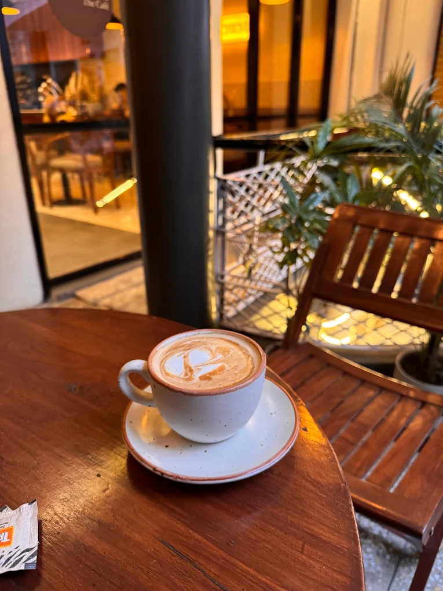
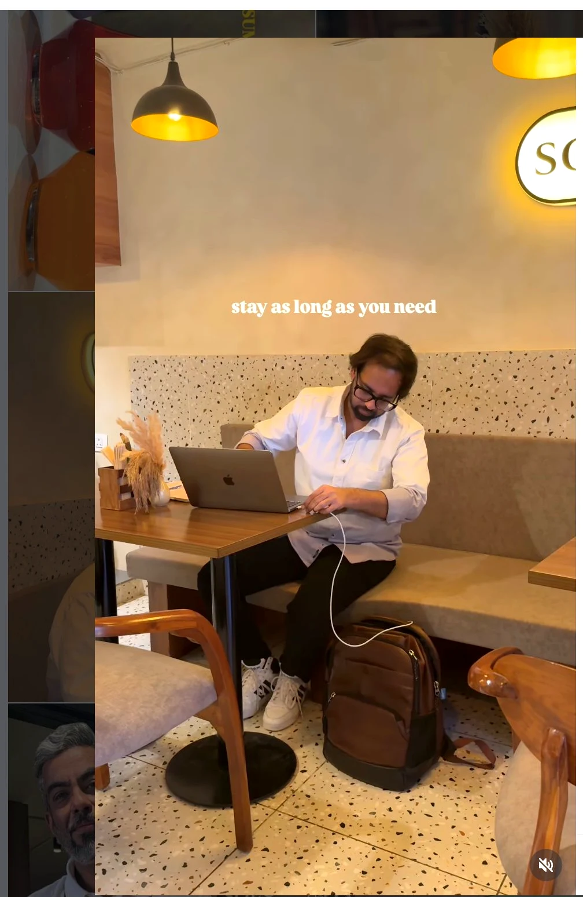
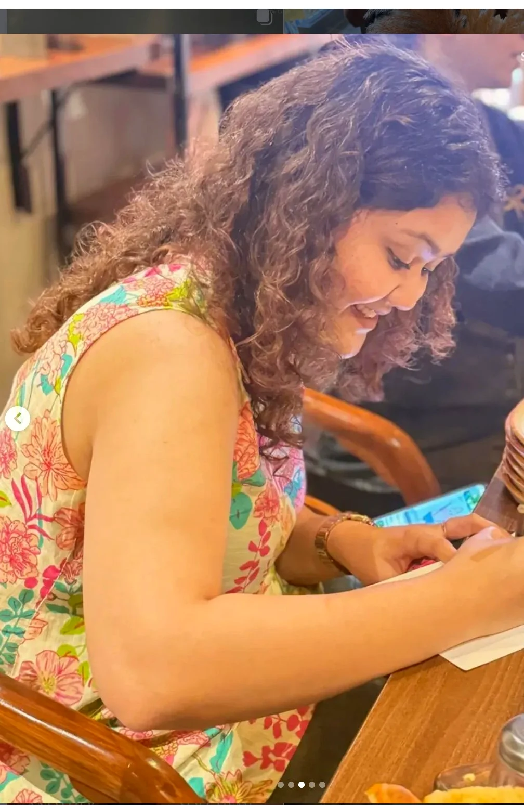
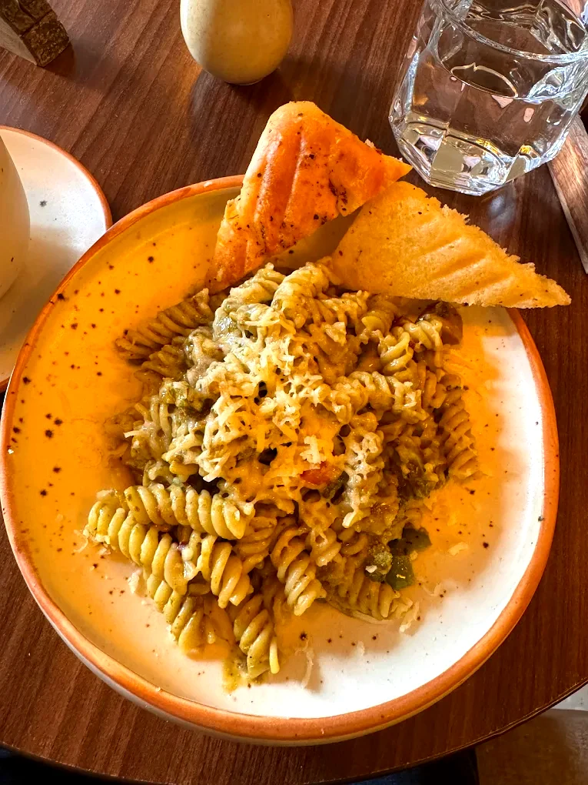

Calm · Work-friendly · Specialty coffee · Art corner · Free WiFi
Solchemi is a quiet, work-friendly cafe at 110 Fashion Hub Street, Shahpur Jat — tucked in the creative lanes behind UCO Bank. With a 5.0 Google rating, free WiFi and a relaxed pace, it's one of South Delhi's best spots for focused work, specialty coffee and a good meal without the rush.
The menu spans signature Tortizzas, fresh salads, breakfast plates, pasta and sandwiches — alongside specialty espresso, iced lattes and slow-brewed teas. There's also a reading and painting corner open to all visitors, making Solchemi something more than just a cafe.



